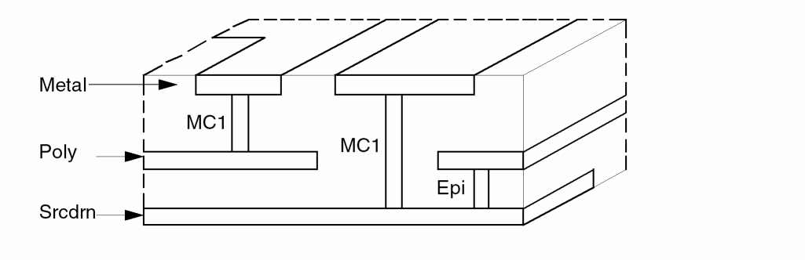

12
Input-Layer Block Commands
Chapter 12 discusses the Input-Layer Block Commands in alphabetical order.
Introduction
This section describes how you enter layer names to correlate with layout layer numbers. You define these layer names in the Input-Layer block. You can create as many Input-Layer blocks as you need as long as you do not use different layer names to represent the same layout layer. The preprocessor concatenates the individual names and checks their syntax.
LAYER1 = 1 DATATYPE = 0
LAYER2 = 2 DATATYPE = 0
.
.
.
LAYER1 = 9 DATATTPE = 1
However, if the LAYER1 layers are located too far, it will be aborted. The Dracula card can read in only a maximum of 51 layers at once. When this number is exceeded, the layers fail to be merged. This problem can be resolved by reorganizing the order of layer entries such that entries of the same layer name will be handled in the same pass.
Using Text
Dracula requires that you attach text strings to layout geometries during ERC, LVS, LPE, PRE, and consistency checks. Text strings identify circuit components such as the power supply, ground, clock, or pads. Text also identifies nodes and virtual connections and defines circuit elements. Dracula uses text for the following purposes:
-
To specify the power supply and ground nodes for ERC, LVS, LPE and PRE
The text string denoting the power supply can be VCC, VDD or XXX:P. The text string denoting the ground node can be VSS, GND, GROUND, or XXX:G. For more information, refer to the Text Conventions section in this chapter. -
To specify nodes that you probe with the PROBE command
You can probe only text-labeled nodes. For more information, refer to Chapter 13, “Operation Block Commands.” -
To specify a virtual connection or wire between separate geometries
For example, you can handle two physically separate VCC pads as if they were part of the same node. Thus you can check a partial layout, such as a single cell or a layout excluding the memory arrays. A colon on the end of a text string indicates a virtual connection, for example, VCC: to VCC: or XYZ: to XYZ:. -
To denote correspondence points for LVS
Each point corresponds to one logic schematic node of the same name. For example, VCC to VCC, VSS to VSS, and CLOCK to CLOCK. The greater the number of correspondence points, the more effective the LVS check. As a guideline, you must label all pads. You also need to label critical internal nodes and nodes in highly parallel circuits.
Permissible characters and syntax rules are listed in the Text Conventions section.
In an Applicon database, text strings are already attached to the geometries. Typically, you define and enter text strings at the polygon level. Dracula recognizes only those text strings at the layers and fields that you specified in the Input-Layer block. In the following example, the metal layer (geometry layer 9) has a text layer (text layer 60) attached to it.
*INPUT-LAYER
metal = 9 TEXT 60
*END
In GDSII, you do not directly attach text strings to layout geometries. Text strings are part of a separate layer and do not have pointers back to polygons. Dracula attaches text to its corresponding geometry according to your definition in the Input-Layer block. For example,
*INPUT-LAYER
diffus = 2
poly = 8
metal = 9 TEXT 60
text = 20 ATTACH metal
CONNECT-LAYER = diffus poly metal
PAD-LAYER = vapox
*END
In this example, the text on layer 60 is not specifically attached to one layer, so it attaches to one of the connect layers. The text on layer 20 can attach only to layer metal.
Dracula attaches text in the reverse order of the CONNECT-LAYER, where the metal layer has the highest priority and the diffusion layer the lowest. In the previous example, text strings with coordinates within the metal geometries are attached to the metal layer and eliminated from further attachments. All remaining text in the polysilicon is attached. Finally, the text in the diffusion is attached and Dracula discards any text outside the three layers.
To use a text coordinate file, you can enter text directly using the EDTEXT command in the Operation block. For more information about the EDTEXT command, refer to Chapter 13, “Operation Block Commands.”
Texting Mechanism
For LVS and some DRC, ERC, and LPE checks, you must label some electrical nodes in the database with the texting mechanism. The correct use of text is critical, especially for LVS and ERC checks.
The main way to enter text into the Dracula database is with a CAD graphics system. However, because CAD graphics systems let you enter text that is not meaningful to Dracula (such as cell text), you must establish a screening procedure to put text on reserved text layers or text types.
The second way to enter text into the database is to create a text coordinate file. This file contains text and text origins (x,y coordinates in natural units). Whenever both the CAD graphics system and the text coordinate file have different text at the same location, Dracula discards the text from the CAD graphics system.
Text Conventions
Dracula text can incorporate any of the characters shown in the following table. Dracula converts any other character except the colon (:) to a question mark (?) and treats a question mark as a text delimiter. The text is truncated at that point. There is no limit to the number of characters you can specify on one line.
The following rules apply to text:
- A layer name cannot begin with temp or out. For example, temp1 and outmet are not allowed. The preprocessor checks for these syntax violations.
- The first character must be a letter and can be in uppercase or lowercase.
- To denote a virtual wire, add a colon (:) after the text.
-
To denote a pad or a power or ground, add a colon (:) and one pad character after the text. The pad character can be one of the following:
If the text is VCC or VDD, Dracula assigns the P pad type. If the text is VSS, GND, or GROUND, Dracula assigns the G pad type. If the text is VEE or VBB, Dracula assigns the S pad type. - Use LVS-required pad text for initial correspondence only. You can attach text to the pad, metal, or any other connect layer. For ERC, you must define the pad as an ELEMENT PAD and text is optional, except for power and ground pads.
- Text suffixed with a colon (:), such as ABC:I and ABC:O, is virtually wired even when there is no physical connection. Be cautious when using the virtual wire specifier in ERC, LVS, or LPE.
-
Applicon texting requires that you attach the text to its own layer geometries. If the text is on the same layer as metal and you want metal attachment, the input layer and text layer are as follows:
metal = 6 TEXT = 6
- Be sure you do not label two nodes with the same text string unless you use a colon; otherwise, you create an open circuit.
- You can label a node more than once with the same text string. Be sure not to label the same node with two different text strings. Otherwise, you create a shorted circuit.
-
You can specify a text layer declaration on a different line if the input-layer and text-layer are on different layers.
In the following example, metal is read in from layer 6, and layer 4 is read in as dummy. Text from layer 8 is read in and processed.metal = 6 dummy = 4 TEXT = 8 *OPERATION AND metal dummy abc
Attaching Text to a Geometry
You can attach text to a geometry when the text origin (x,y location) is inside, at the edge, or on the vertex of the geometry, as shown in the following figure.
You can attach text to geometries from one of many layers. The text is attached to geometries on only one layer according to the text-layer sequence until it is finally attached or the text is discarded.
Specify text-layer sequences using the TEXTSEQUENCE command in the Input-Layer block in reverse order of the layer sequence. The layers you specify in TEXTSEQUENCE must be specified in the CONNECT-LAYER command. If you do not specify TEXTSEQUENCE, specify the text-layer sequence with the CONNECT-LAYER command in the reverse order of the layer sequence.
Labeling Electrical Nodes
If you attach text to a geometry that represents part of the layout data for an electrical node, the text becomes the label of the node. A node can carry one unique label, and no other node can carry that label. Therefore, you can identify a node by its label and you can identify a group of nodes by a group of labels. To refer to a group of labels for ERC and DRC checks, you can use a question mark (?) as a wildcard character. For example,
Text from a CAD Graphics System
To input text from a CAD graphics system, specify the layer definition in the Input-Layer block on a separate line. You can also specify a text layer by appending the text to a geometry layer definition.
name1=layer1TEXT =layer2TEXTTYPE =numberATTACH =name2
|
Specifies the source geometry layer number in CAD graphics system |
|
|
Specifies the name of geometry layer to which text is attached |
TEXTTYPE and ATTACH commands are optional.
If you specify an attached layer name, texts are attached to that layer only.
If you do not specify an attached layer name, texts are attached to one of the layers in accordance with the CONNECT-LAYER or TEXTSEQUENCE command.
Example 1
This example shows how you specify text on one line.
METAL = 12 TEXT = 80 ATTACH = METAL1
Example 2
This example shows how you specify a text layer definition on a separate line.
POLY = 6
TEXT = 12 TEXTTYPE = 6:12 ATTACH = METAL
Text for Power and Ground
Dracula recognizes the following power and ground names and converts them to pad types:
Texting Multiple Power Supply Pads
BASE-LAYER
BASE-LAYER =layer-name1{layer-name2} {...}
Description
Specifies layers containing composite plane geometries that must be mapped into Hcells.
Checking Method
Arguments
The name of the layer defined in the Input-Layer block.
You can use this command for gate-array layouts, where composite plane layers (the base-layers) provide a set of symmetric geometries overlaid by Hcells that parameterize the semi-custom circuit with transistors, contacts, and other connections on one or two layers.
Composite mode HLVS cuts out the composite-plane geometry portions that lie within an Hcell boundary. Dracula then maps and merges these geometry portions into the Hcell allowing them to create devices. The corresponding Hcell subcircuits on the netlist must include whatever connectivity the composite-plane geometry portions on the layout side provide.
The BASE-LAYER command handles geometries that are not identical for different placements. Geometries that are the same for each placement move into the cell. Unique portions of the geometries stay at the composite level.
- If the geometries are needed to form devices in the cell, cell mode HLVS reports missing layout devices.
- If the geometries form extra (incorrect) devices in the cell, Dracula finds them in the extra device check and flags them as extra composite-to-cell devices.
- If the geometries are needed to connect nodes in the cell, cell mode HLVS flags these as errors.
- If the geometries connect nodes in the cell incorrectly, composite mode flags them either as unmatched composite-to-cell internal node connections or as errors in connectivity for cell pins.
Example
In this example, assume that PWELL and NSUB are in the composite layer. If PWELL and NSUB are not identified as BASE-LAYER, then all CMOS transistors in the Hcells do not have substrates. If PWELL and NSUB are identified as BASE-LAYER, then all MOS devices can have substrates, if the PWELL is under the N devices and the NSUB is under the P devices.
BASE-LAYER = PWELL, NSUB
CELLBNDY
CELLBNDY =layer-number{DATATYPEdata-type}
CELLBNDY = AUTO [value]
Description
Specifies the input layer used to build cell boundaries. For hierarchical cells with boundaries defined in this layer, these boundaries override the bounding boxes generated by the program. If you do not specify CELLBNDY, Dracula derives the bounding boxes from the layers drawn within the cell.
The SUBSTRATE and CELLBNDY commands affect the formation of the substrate layer, which affects the formation of the reverse field layer. For HLVS and HLPE jobs, the connectivity of the reverse field layer can also be affected. For example
SUBSTRATE = BULK 63
NOT BULK PWELL NSUB
The NSUB layer of a cell in flat mode and the NSUB layer of the same cell as an Hcell in cell mode might differ because of differences in the BULK layer. If this causes problems in connectivity, you can modify the cell boundary. You can use the CELLBNDY command to make the cell boundary larger than the Hcell default. To prevent creating open circuits, you can add virtual wire texting to connect them.
For more information, refer to the
When you specify AUTO, Dracula automatically generates a rectilinear cell boundary.
Checking Method
Arguments
Specifies the layer number on the layout database.
Valid for GDSII format or CADENCE. Default is all datatypes. You can also use an inclusive range value (for example, DATATYPE=7:10).
Use this command for cells with non-rectangular cell boundaries and gate arrays. For example, if only metal is digitized inside the cell and diff and poly are digitized at the composite level, the resulting devices are electrically inside the cell but are built from polygons digitized outside the bounding box.
You can specify only one boundary for each cell. The boundary can be any rectilinear polygon. Dracula creates bounding boxes as cell boundaries for Hcells that have no input boundaries specified in the CELLBNDY layer. The input boundaries always supersede the bounding boxes.
Running a job with this command creates the 9CELLBND.DAT, 6CELLBND.DAT, 7CELLBND.DAT, and CELLBNDY.DAT files. These are binary files in Dracula formats.
In rectilinear cell applications, under normal circumstances, Dracula makes correct electrical connections and you do not need CELLBNDY. However, when you specify FRAME or GEN-TEXT-FRAME for a rectilinear cell or when you use BASE-LAYER in either cell or composite mode, you must specify CELLBNDY.
Dracula automatically generates a rectilinear cell boundary.
The amount to oversize or undersize the boundary.
Example 1
This example reads in layer 59 as the cell boundary layer.
*INPUT-LAYER
PWELL=1
DIFPN=2
POLY =3 CTEXT=28 ATTACH=POLY
CONT=5
MET=6 CTEXT=29 ATTACH=MET
VAPOX=7 TEXT=30
PISL=4
CELLBNDY = 59
SUBSTRATE = BULK 63
;
CONNECT-LAY = NSUB PWELL PSRCDRN NSRCDRN POLY MET
*END
Example 2
This example automatically creates a rectilinear cell boundary.
*INPUT-LAYER
.
.
.
CELLBNDY = auto
*END
CONNECT-LAYER
CONNECT-LAYER = layer1 layer2...
Description
Defines the conductor layers of the IC process from bottom to top. If you use a CONNECT command in the Operation block, you must use the CONNECT-LAYER command in the Input-Layer block. Specify only the layers that appear in the CONNECT commands (excluding the contact layers). You can specify multiple layer names on one line or use multiple lines.
For more information about connecting layers, see “Connecting Your Network” in the “Writing Rules for Dracula” chapter in the Dracula User Guide.
Arguments
Specifies the mask order of the layers used in the CONNECT operation (excluding the contact layer). List the bottom layer first and the top layer last.
Layer names must have at least three characters. If you use the layer name in the ELEMENT or PARASITIC commands, the first three characters must be unique.
Text sequence is generated only on layer names that appear in both the CONNECT-LAYER and CONNECT commands.
Example 1
The first three characters of met2 and met1 are the same. If you use this example with an ELEMENT CAP command, this is a syntax violation because the first three characters must be unique. The preprocessor checks for this syntax violation.
CONNECT-LAYER = nsrcdrn poly met1 met2
Example 2
CONNECT-LAYER = psub nwell nsd psd pl1 pl2 metal
CONNECT-LAYER = psub buried base nplus deepn mt1 mt2
CONNECT-LAYER = psub ;bottom layer CONNECT-LAYER = buried CONNECT-LAYER = base CONNECT-LAYER = nplus CONNECT-LAYER = deepn CONNECT-LAYER = mt1 CONNECT-LAYER = mt2 ;top layer
Specify the bottom layer as layer1 followed by the next layers and end with the top layer, usually metal.
Example 3
*INPUT-LAYER . CONNECT-LAYER = srcdrn poly metal . *END *OPERATION . CONNECT metal poly BY mc1 CONNECT metal srcdrn BY mc1 CONNECT poly srcdrn BY epi
You must use the CONNECT-LAYER command for ERC, LVS, and LPE because they require text. Dracula processes the text you specify in the Input-Layer block as follows:
- If you do not specify the TEXTSEQUENCE command and text falls inside (or touches) the geometries of the top layer (metal in the above example) in the CONNECT-LAYER command, Dracula assigns the text as the node name to the top-layer geometries. Otherwise, Dracula tests to see if it falls inside (or touches) the second topmost layer and assigns it to that layer (poly), and so on.
- If you specify the TEXTSEQUENCE command, Dracula uses the layer names and the order of the layers you specify.
-
Each contact layer has a master layer. For example
The MC1 contact layer has metal as its master layer. The contact layer can only connect from the master layer to other layers. Therefore, MC1 can connect metal to poly or metal to scrdrn, but MC1 cannot connect poly to epi. The preprocessor checks for this violation.
Example 4
CONNECT-LAYER = nsd poly met1 met2
CONNECT met2 met1 BY cont CONNECT met1 poly BY cont (not allowed) CONNECT met1 nsd BY cont (not allowed)
The master layer is mt2. The cont contact layer cannot be used to contact mt1 to nsd or mt1 to poly.
CTEXT and ATTACH
CTEXT =text-layer layerPurpose{ATTACH =layer-name}
Description
Specifies the input layer numbers that provide Hcell text. The ATTACH command specifies the input layer to which the Hcell text on the CTEXT layer number is attached.
Without the ATTACH command, Hcell texts on the text-layer fall through the input layers in the order specified by the TEXTSEQUENCE or CONNECT-LAYER commands.
Checking Method
Arguments
The number of the text layer from the layout database.
The purpose for the layer, for example, drawing.
The name of the layer of one of the connect layers.
The layer definition performs an independent function from the CTEXT command, even though they can be on the same line. It is not necessary to include the CTEXT command exactly on the layer to which it attaches. You can put CTEXT either in the left column or following a layer definition.
Example 1
*INPUT-LAYER
poly = 5 CTEXT = 27 ATTACH = poly
metal = 4
CTEXT = 19 ATTACH = metal
CTEXT = 18
Example 2
PDIFF = pdiff TEXT = text drawing ATTACH = metal
TEXT = text drawing ATTACH = metal
NDIFF1 = ndiff1 CTEXT = text1 drawing
CTEXT = text2 drawing
EXPORT
EXPORT layer-name...
Description
Generates layers from an input database and outputs them as Dracula-compatible data files. You can use this command to combine layers from several databases or to compare layers from different databases. The EXPORT command ensures that Dracula does not delete the layers specified even if you use KEEPDATA=NO or KEEPDATA=SMART in the Description block. You do not need an Operation block when you use the EXPORT command.
You can use the EXPORT command to specify any layer-name if KEEPDATA=NO (or SMART) so that the preprocessor does not delete these layer-names. Thus, you can specify not to delete files and layer names (other than trapezoid layers). You can run an interactive program such as Dracula Interactive or Layout Parameter Extraction Post-processor (LPEPRO) even if you specified KEEPDATA=NO (or SMART).
See also the IMPORT-LAYERS section in this chapter.
Argument
Example 1
*INPUT-LAYER
Diff = 1
nplus = 2
polyA = 3
mcA = 4
metalA = 5
EXPORT polyA mcA metalA
*END
Example 2
*DESCRIPTION
.
KEEPDATA = smart
.
*END
*INPUT-LAYER
.
EXPORT = 6nets poly nsd psd pwell nsub contact
EXPORT = metal 6netl 6pads 6pads 6nxrf 6exrf
EXPORT = mosxn8g mosxp8g ; for a CMOS process
.
*END
*OPERATION
.
LVSCHK
*END
Example 3
*DESCRIPTION
PRIMARY = TOPCELL
.
EXPORT = metal2 metal1 poly psd nsd
EXPORT = BOUNDARY SCRXTEXT TREETOPC
The first run reads in and exports all the input layers needed. When the second job does not input any new layers and does not run GDS2IN, you should export the BOUNDARY, SCRXTEXT, and TREExxxx (where xxxx is the first four characters of your primary name) files. These files are often needed by the second job.
FRAME-EXCLUDE-LAYER
FRAME-EXCLUDE-LAYER = layer1 layer2 .....
Description
Allows several specified layers not to be clipped by the FRAME BY command.
Arguments
Name of the specified obstruction layer defined in the hcells.
Example
*INPUT-LAYER
MT1 = 10 ;METAL ONE LAYER
MT2 = 11 ;METAL ONE LAYER
MT3 = 13 ;METAL ONE LAYER
M10BS = 75 ;M1 P&R obstruction layers
M20BS = 76 ;M2 P&R obstruction layers
M30BS = 77 ;M3 P&R obstruction layers
FRAME-EXCLUDE-LAYER = M10BS M20BS M30BS
*END
*OPERATION
SIZE M10BS BY 0.5 OM10BS
SIZE M20BS BY 0.7 OM20BS
XCELL MT1 0M10BS OUTPUT ERR 1
XCELL MT2 0M20BS OUTPUT ERR 2
*END
FRAME-HOLE-LAYER
FRAME-HOLE-LAYER = LAYER
Description
Creates a new layer that is the same shape as the frame, as defined by FRAME BY commands in cell mode.
Arguments
Example
The following are examples of checking for the illegal presence of layer "CONT4" inside or cutting the frame hole in cell mode.
*INPUT-LAYER
CONT4= 4
FRALE-HOLE-LAYER= FL
*END
*OPERATION
SELECT CONT4 OVERLAP FL OUTPUT ERR 1
*END
GEN-TEXT-LAYER
GEN-TEXT-LAYER =layer-name1{layer-name2} {...}
Description
Specifies the layers to which the Hcell text generated by GEN-TEXT is attached. If you do not specify the GEN-TEXT-LAYER command, GEN-TEXT defaults to the layers specified by the CTEXT and ATTACH commands. The layers specified by the CTEXT and ATTACH commands contain the original cell text from the database. The GEN-TEXT command attaches the text to all layers that qualify.
Checking Method
Arguments
The layer name of one of the connect layers.
You must ensure that GEN-TEXT, at a minimum, attaches cell text to all layers that can be used as pins (connecting to composite or other Hcells) or as feedthroughs. Otherwise, Dracula reports discrepancy errors when running composite mode HLVS.
Example
GEN-TEXT-LAYER = nsub pwell poly metal
IDTEXT
layer1=IDTEXTlayerNumber
Description
Lets you add text to layers for identification purposes. These layers are independent of connectivity. You can select polygons by idtext names from a particular idtext layer.
The IDTEXT command is useful only with the SELECT LABEL {[t] | [t’]} command.
Arguments
The IDTEXT layer name in the rules file.
The layer number from which text is extracted for layer1.
Example
In this example, two IDTEXT layers, idtxt1 and idtxt2, extract texts from input layers 1 and 2. There is text on layer 2 for connectivity purposes (for example, naming electrical nets).
*INPUT-LAYER
metal = 1
idtxt1 = IDTEXT 1
poly = 2 TEXT 2
idtxt2 = IDTEXT 2
cont = 3
*END
*OPERATION
SELECT metal BY idtxt1 LABEL[t] {RES111,RES222,RES333} pad1 OUTPUT mpad 2
SELECT poly BY idtxt2 LABEL[t'] RES? pad2
*END
IMPORT-LAYERS
IMPORT-LAYERSpath-name1/layer-name1,path-name2/ layer-name2...
Description
Combines layers from a previous run with the current job. Use this command to combine or compare layers from different databases.
If you do a database comparison or logical operation, the SCALE and RESOLUTION commands must be identical in the Description blocks of both input rules files. For the format required to compare layers from different databases, refer to the database comparison example in the CONVERT-DATABASE section in Chapter 11.
You can use the SNAP command instead of RESOLUTION to specify grid snapping.
Arguments
Specifies the layer to import. You can use the directory path name to specify the layer file.
A user-defined layer name specified in the Operation block but not in the Input-Layer block. You can specify more than one layer-name on a line.
Example
*INPUT-LAYER
IMPORT-LAYERS polyA mcA metalA
IMPORT-LAYERS polyB
IMPORT-LAYERS mcB
.
.
polyC = 5
metalC = 11
.
*END
KTEXT
KTEXT = <gds_layer_number> {ATTACH = < <Dracula_layer_name> >}
Description
Specifies the text input source from GDS2 layer for the “Keep Cell Text” feature in an LVS or LVL job. If ATTACH is specified, the text will be attached to that specific Dracula layer. The syntax is very similar to the command TEXT.
There are two ways to specify the text input source for the “Keep Cell Text” feature. One is the KTEXT command in the Input-Layer Block which reads texts from the CAD graphics database, the other is the KEDTEXT command in the Operation block which reads texts from a plain ASCII file. The two commands can exist simultaneously.
Checking Method
Arguments
The number of the assigned layer in the layout CAD system.
User-defined Dracula layer name.
Example
METAL1 = 6 KTEXT = 8
METAL1 = 6 KTEXT = 8 ATT = METAL1
KTEXT = 8
KTEXT = 8 ATT = METAL1
Layer Name Definition
layer-name=layer-number{OFFGRID =off-grid} {DATATYPEdata-type} {TEXT =text-layer} {TEXTTYPEtext-type} {ATTACHlayer-name1} {ANGLE = ALL/90/45/NON-45/ACUTE/ NON-90/NON-ACUTE}
TEXT =text-layer layerPurpose{TEXTTYPEtext-type} {ATTACHlayer-name1}{ANGLE = ALL/90/45/NON-45/ACUTE/NON-90 /NON-ACUTE}
layer-name=layer-purposeTEXT = PIN
layer-name=layerPIN
layer-name=IDTEXT layer
Description
The layer-name variable assigns names to layout layers. You can name layers from GDSII formats.
POLY=3 CTEXT=29 ATTACH=POLY
MET=6 CTEXT=29 ATTACH=MET
VAPOX=7 TEXT=29
Arguments
User-defined layer name. The layer-name can have a maximum of seven alphanumeric characters and no special characters. The first character must be a letter. You can use the same layer name on more than one line to group layers from different layer numbers or datatypes. Also, you can use inclusive range values (for example, metal = 1:3).
You cannot use the name “TEMP” for any layer. This name is reserved for a temporary Dracula file.
The number of the assigned layer in the layout CAD system. You can use inclusive range values. For GDSII, the supported range of layer-number is 0-255. For DFII formats, specify the layer-name.
Checks the off-grid value of each input layer. You can specify different off-grid values for each input layer.
Valid only for GDSII. You can specify a range value (for example, DATATYPE=7:10). The supported range is 0-255. The default is all datatypes.
You can designate text as a layer-name so that it is associated with a layer number, for example, text = 40 ATTACH metal. You can use a range value, for example, TEXT=11:14. The default is that TEXT is not used.
Extracts objects from Design Framework II based on layer purpose information you specify in the rule file. A Dracula layer can include EDGE or Design Framework II layer purpose information. The default includes all layer purposes except purpose pin.
Field numbers associated with TEXT text-layer. You can use a range value. The default is all text types.
Layer-name for a layer specified in the TEXTSEQUENCE or CONNECT-LAYER commands. The ATTACH command is optional.
You can choose certain shapes of polygons as output from the Dracula job into your layer database. You can only use one ANGLE command per layer number.
Outputs all polygons. Default.
Outputs only rectangles with edges parallel to the x or y axis.
Outputs only polygons containing one edge that is not 90 degrees to the x or y axis. These are non-manhattan polygons.
Outputs all polygons that have all edges on either 45, 135, 225, or 315 degrees or manhattan.
Outputs only polygons containing one edge that is not a multiple of 45 degrees to the axis.
Outputs only polygons containing one acute angle.
Outputs only polygons not containing any acute angle.
Example 1
diffus = 2
metal = 9
poly = 8
implant = 4
metal1 = 12
metal1 = 22
Diff = 1
Emitter = 3:6
base = 7
metal = 10:14
TEXT 10 ATTACH metal
TEXT 16 ATTACH scrdrn
TEXT = 20 ATTACH poly
Dracula reads the layer-name commands and processes the data line by line. To split the data onto multiple layers using the DATATYPE or TEXTTYPE commands, you must assign the DATATYPE and TEXTTYPE layer names first.
Example 2
emitter = 1 DATATYPE = 2 emitb = 1 DATATYPE = 1:3 nplus = 1 TEXT = 18 TEXTTYPE = 5
The emitter layer contains layout data from layer 1 of DATATYPE 2. The emitb layer contains layout data from layer 1 of DATATYPE 1 and DATATYPE 3. The emitb layer does not contain DATATYPE 2 because this was previously used for the emitter layer. The nplus layer contains all data on layer 1 with DATATYPE 0 and DATATYPE 4-63. This command reads text from layer 18 of TEXTTYPE 5.
Example 3
Dracula layers can include EDGE or Design Framework II layer-purpose information.
poly = poly drawing
pwell = pwell all
metal = metal
srcdrn = srcdrn pin
If you assign PIN to the layer-name variable, Dracula extracts the geometry on the pin purpose layer. If you specify TEXT = PIN, Dracula extracts the text from the pin purpose layer.
When you define the pin purpose to create text, Dracula reads in only the pin purpose shapes. When the pins are on a design layer purpose pin, you must define a separate layer for the text, such as
ME1 = metal1
TEXT=metal1 pin attach=ME1
TEXT=metal1 attach=ME1
Example 5
*DESCRIPTION
PRIMARY = a1
SYSTEM = GDS2
SCALE = .001 MICRON
PRINTFILE = DRC3
RESOLUTION = .001 MICRON
INDISK = in.db
OUTDISK = DRC3OUT
*END
;
*INPUT-LAYER
metal = 1
idtxt1 = IDTEXT 1
poly = 2 TEXT 2
idtxt2 = IDTEXT 2
cont = 3
*END
;
*OPERATION
SELECT metal BY idtxt1 LABEL[t] {RES111,RES222,RES333} pad1
OUTPUT mpad 2
SELECT poly BY idtxt2 LABEL[t'] RES? pad2
*END
OUT-ANNOTATED-LAYER
OUT-ANNOTATED-LAYER = LAYER1 LAYER2 LAYER3 ...
Description
With this command, a user can define the names of the output layers to be annotated. Default output layers are layers in CONNECT-LAYER and device layers in the ELEMENT command, for example ELEMENT MOS[P] NGATE POLY NSD PWELL).
Argument
The name of the output layer to be annotated
Example 1
In the following example, the output layers to be annotated are ME1, ME2, ME3, and ME4.
OUT-ANNOTATED-LAYERS = ME1 ME2 ME3 ME4
PAD-LAYER
PAD-LAYER = pad_layer [affected_layer1] [affected_layer2...]
Description
Specifies the location of the pad in the primary cell for PRE or HPRE. Extra terminals are formed automatically in PRE or HPRE jobs by the LOGICAL operation on the CUT-TERM input conduction-layer and by the pad-layer defined in the PAD-LAYER command. Pad terminals are selected from each RCONNECT-LAYER geometry that overlaps the pad-layer and are reported as the pad name/number in the .SUBCKT statement in the SPICE/DSPF file by LPESELECT or SPFSELECT commands. You must specify the PAD-LAYER command in the PRE or HPRE jobs.
You can also specify the affected layers in a PAD-LAYER command so that extra terminals or circuit pads are formed only on the affected layers you specify. You can specify multiple PAD-LAYER commands, with different pad layer names and different affected layers specified for each, in the same rule file.
Checking Method
Argument
The name of an input layer from the layout database or a derived layer.
Cut-term layer. This can either be conduction layers or derived layers that are affected by pad_layer. If you do not specify any affected layers, the pad_layer affects all reconnect layers.
Example 1
In the following example, an input layer is defined as a pad-layer, and the pad-layer affects all reconnect-layers.
*INPUT-LAYER
METAL = 10
MET2 = 12 TEXT = 30
VAPOX = 60
PAD-LAYER = VAPOX
Example 2
In the following example, a derived layer is defined as a pad-layer, and the pad-layer affects all reconnect-layers.
*INPUT-LAYER
METAL = 10
PAD-LAYER = PPAD
...
*OPERATION
SELECT METAL LABEL[R] ? PPAD
Example 3
In the following example, pad layer PAD1 affects CUT-TERM layer METAL1 and METAL2. Pad layer PAD2 affects CUT-TERM layer METAL3. Pad layers PAD1 and PAD2 do not affect any other RCONNECT layers.
CONNECT-LAYER = PSB NWELL PSD NSD POLY METAL1 METAL2 METAL3
RCONNECT-LAYER = PSUB NWELL PWELL NSD PSD PTRM M1TRM M2TRM M3TRM
PAD-LAYER = PAD1,METAL1,METAL2
PAD-LAYER = PAD2,METAL3
....
CUT-TERM METAL1 CONT M1RES M1TRM
CUT-TERM METAL2 VIA M2RES M2TRM
CUT-TERM METAL3 VIA M3RES M3TRM
....
Example 4
In the following example, the PAD layer affects the derived layer, M1BIAS.
RCONNECT-LAYER = ...M1TRM
PAD-LAYER = PAD M1BIAS
...
CUT-TERM M1BIAS CON M1RES M1TRM
Dracula does not support the PAD-LAYER command if the terminal layer from CUT-TERM is not in the RCONNECT-LAYER. For example, the following command is not valid:
RCONNECT-LAYER = ...M1TRM
PAD-LAYER = PAD,M1Z
...
CUT-TERM M1Z CON M1RES OM1TRM
OR OM1TRM OTHER M1TRM
...
RCONNECT M1TRM POLY BY CON
...
In addition, Dracula does not support the following command because the affected layers psd and nsd are not CUT-TERM layers.
CONNECT-LAY = PSUB NWELL PWELL NSD PSD,POLY1 METAL
RCONNECT-LAY = PSUB NWELL PWELL NSD PSD PTRM MTRM
....
PAD-LAYER = VAPOX,METAL1,PSD, NSD
PAD-LAYER = PAD,POLY1
....
CUT-TERM METAL1 CONT MRES MTRM
CUT-TERM POLY1 CONT PRES PTRM
.....
PIN-TEXT-LAYER
PIN-TEXT-LAYER = pin_layer [layer] [value]
Description
Creates an additional physical layer for each text layer. This physical layer creates squares that surround all text on the composite plane only. This layer can be used for logical operations.
If the pad-layer is generated from PIN-TEXT-LAYER, different pin layers can be generated from different texted layers if you specify the texted layer name in PIN-TEXT-LAYER command. You can specify multiple PIN-TEXT-LAYER commands in the same rule file if you specify multiple pad-layer commands. The PIN-TEXT-LAYER command includes text from EDTEXT-FILE.
Checking Method
Arguments
The corresponding pin layer generated from layer. The layer name can have a maximum of seven alphanumeric characters and no special characters. The first character must be a letter.
Size of the squares that surround the text. The value must be a positive integer, can be less than 1, and can have a maximum of three digits. Default value is 2, which means the square is 2 by 2. The minimum value is one resolution unit.
Example
The following example generates pin-layer P1 for text on METAL1 and P2 for text of METAL2. Pin-layer P1 is defined as a pad-layer that affects METAL1. Pin-layer P2 is defined as a pad-layer that affects P2. If text on METAL1 falls inside an overlapped area of METAL1 and METAL2, only one terminal (on METAL1) is formed.
PIN-TEXT-LAYER=P1, METAL1
PIN-TEXT-LAYER=P2, METAL2 3
PAD-LAYER=P1, METAL1
PAD-LAYER=P2, METAL2
RCONNECT-LAYER
RCONNECT-LAYER = layer1 layer2...
Description
Specifies the mask order in which to reconnect the layout circuit after PRE splits conduction layers to generate parasitic resistors.
This command is required if you include an RCONNECT command in the Operation block.
This command lists the same layers as the CONNECT-LAYER commands, substituting the conduction layers from the RCONNECT commands that have been split into resistor and resistor terminal layers for the corresponding resistor terminal layers. The syntax of this command is the same as the CONNECT-LAYER command. You can specify layer names in a single RCONNECT-LAYER line or in multiple RCONNECT-LAYER commands.
Checking Methods
Arguments
The layer names that appear in the RCONNECT operation. Each layer name must be at least three characters long. If the layer names appear in an ELEMENT command, the first three characters must be unique.
Example
In this example, the POLY conduction layer is split into a resistor terminal layer, PTRM, and a resistor layer. The RCONNECT-LAYER sequence of parameters is the same as the CONNECT-LAYER parameters except for substituting PTRM for POLY. The RCONNECT command parameters also resemble the CONNECT parameters, with PTRM substituting for POLY.
CONNECT-LAYER = NSD POLY MET1 MET2
RCONNECT-LAYER = NSD PTRM MET1 MET2
RCX-LAYERS
RCX-LAYERS = LAYER1 LAYER2 ...
Description
This command defines the layers which are passed into Assura RCX through the xcn file created by the GENXCN utility. Please refer to the Assura Physical Verification Developer Guide for more information on the xcn file.
This command works only if RCX-MODE=YES or RCX-MODE=LAYOUTONLY (see “RCX-MODE”). For additional information see the Dracula Users Guide, “Running the DracToRCX Interface”.
Argument
Specific layers which will be used by GENXCN to create the xcn file required by RCX. The specified layer must be defined in the INPUT-LAYER section of the rule file.
Example
*DESCRIPTION
...
RCX-MODE=YES
...
*END
*INPUT LAYER
...
*END
...
RCX-LAYERS = mt1, mt2
...
*END
SUBSTRATE
SUBSTRATE = layer-name layer-number
Description
Generates the substrate layer you can use as a regular layer in an operation. Dracula forms the geometries on the substrate layer in the following ways:
- In flat mode, the substrate layer encloses all the layout data of the processed chip in a rectangle 1.0 micron or 1.0 mil larger. For hierarchical, cell, or composite modes, the substrate layer is slightly different.
- In the cell plane of each Hcell, the substrate layer is the same as the bounding box of the Hcell. You can supersede the “bounding-box” area by providing a rectilinear boundary using the CELLBNDY command. No automatic growing takes place.
- In the composite plane, the substrate region of each cell placement is trimmed from the composite substrate layer. The outer boundary of the composite substrate grows as in flat mode (by 1.0 micron or 1.0 mil), but the interior contains holes as the result of trimming.
The SUBSTRATE and CELLBNDY commands affect the formation of the substrate layer, which in turn affects the formation of the reverse-field layer. The connectivity of the reverse-field layer might affect HLVS and HLPE jobs. The example below illustrates a possible problem.
Dracula issues the following fatal error message if the WINDOW command specifies a window outside the substrate layer:
*/FE*** FATAL ERROR DETECTED: NO DATA HAVE BEEN FOUND
-- PLEASE CHECK DATABASE AND WINDOW SIZES.
Arguments
The name of the generated rectangle. The layer name can have a maximum of seven alphanumeric characters and can have no special characters. The first character must be a letter.
A two-character dummy field. You can specify any number from 0 to 99. The number is not significant.
Example
SUBSTRATE = BULK 63
NOT BULK PWELL NSUB
The NSUB layer of a cell in flat mode and the NSUB layer of the same cell (as an Hcell) in cell mode might differ because of differences in the BULK layer. If this causes connectivity problems, especially in cell mode, use the CELLBNDY command to alter the boundary by making it slightly larger than default. If you have a problem with open circuits, you can provide virtual wire texting to connect the wire.
TEMPORARY-LAYER
TEMPORARY-LAYER =layer-name1layer-name2...
Description
Specifies the layer names you use repeatedly so that the preprocessor does not issue a warning each time it encounters a repeated name. This command does not suppress any real error messages. You can repeat this command as often as necessary, but you need to specify each repeated command only once.
This command is useful when you use the same layer name repeatedly to save disk space or improve readability of your rules.
Note:- In Distributed Dracula (DD) mode, temporary layers are assigned different names internally. The TEMPORARY-LAYER command should not be used in DD mode. Even if it’s used, it has no effects.
- In single mode, TEMPORARY-LAYER command has effects. An original mask layer should not also be defined as a TEMPORARY-LAYER.
Arguments
Name of the layer assigned as a temporary-layer.
Example
In this example, in the first line of the Operation block, abc is the name assigned as the result of the AND operation. In the second line, abc is assigned as the result of the NOT operation. Normally, Dracula issues a WARNING to prevent you from directing the output of multiple commands to abc. If you specify the TEMPORARY-LAYER command, the preprocessor does not issue a warning message and allows multiple use of abc as an output.
An error message appears for the last command because the program needs real in the final output stage to output the polyg01 error file. The TEMPORARY-LAYER command does not suppress any real error messages. If an error of this type occurs, use a name other than real for the last logical operation.
*INPUT-LAYER
.
.
TEMPORARY-LAYER = abc, nbc, real
*END
*OPERATION
AND ttt ccc abc
NOT abc ddd abc
SELECT eee cut fff nbc
OR abc nbc nbc
OR abc cbs real OUTPUT polyg01
OR abc obs real <--ERROR!
TEXTSEQUENCE
TEXTSEQUENCE = layer1 layer2...
Description
Redefines the text sequence generated by the CONNECT-LAYER command. The TEXTSEQUENCE command reorders the interconnect layers for attaching text. Text attaches first to the rightmost argument, then in order from right to left, similar to the CONNECT-LAYER command.
Arguments
The name of the layer in the CONNECT-LAYER command (excluding contact layers).
Example
In this example, TEXTSEQUENCE reorders the text assigned to the interconnect layers poly and srcdrn and eliminates text attachments to the metal layer. Dracula tests whether the text attaches or falls in the srcdrn layer and assigns a text name accordingly. For text not assigned to the srcdrn layer, Dracula tests for the poly layer and assigns the text name accordingly. It disregards text not assigned to either layer.
CONNECT-LAYER = srcdrn poly metal
TEXTSEQUENCE = poly srcdrn
Return to top